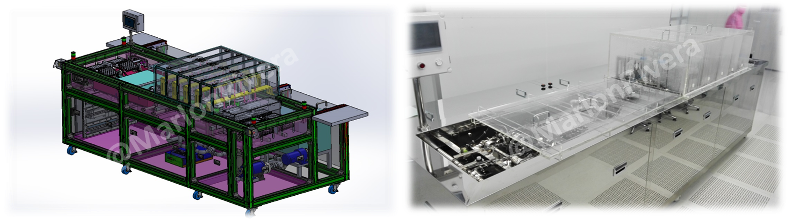

← Back to projects
R&D Machine Development • Philippines / Vietnam • 2015
Automatic Spray Machine
Complete automated spraying platform developed from customer requirements through international deployment.
LSIS PLCHMIDI PumpSolidWorksPneumatics

Responsibilities
Customer analysis, machine concept, SolidWorks design, PLC/HMI programming, pneumatic design and acceptance support.
What needed to be solved
Achieve consistent coating quality while reducing operator dependency and maintaining reliable continuous operation.
Engineering approach
Integrated product handling, servo positioning, spray control, HMI monitoring and safety interlocks into one automated sequence.
Key outcomes
- Deployed in the Philippines and Vietnam
- Version 2 developed
- Patent recognition
- Employee of the Year contribution